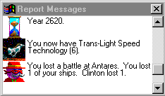

Playing Spaceward Ho!
Messages & The Report Window

The Report Window is a scrolling history of the important things that have happened over the last several turns. Each message will appear in the lower left hand corner of the Star Map at the beginning of each turn. When you click on the message, it will go on to the next one.
There are many different kinds of messages. When you explore a star, you'll get a message about the star's temperature and gravity. When you colonize a planet, you'll get a friendly notice. When you're in a battle, you'll get a message summarizing the result.
Every turn, you'll receive hints on playing Spaceward Ho!. Once you've seen them all, you can turn it off by going in the Preferences... from the "Options" menu.
You can click on an old message in the Report Window to get further information. For example, when you click on a battle summary, Spaceward Ho! will replay the battle. When you click on a message mentioning a planet, you'll scroll the map to that planet and select it.